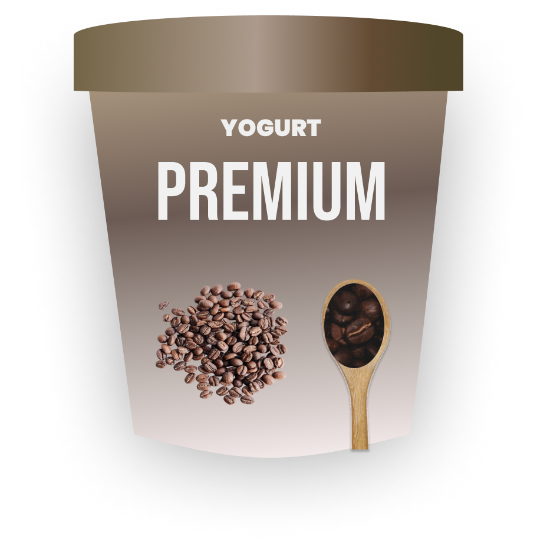

Yogurts
Explora nuestra amplia variedad de yogures, perfectos para cada momento del día. Desde opciones naturales y cremosas hasta combinaciones con frutas frescas, semillas y granola, todos están elaborados con ingredientes de alta calidad. Disfruta de una experiencia deliciosa y saludable en cada cucharada. ¡Encuentra tu favorito y dale un gusto a tu día!
Yogurt Pera

Yogurt Mango

Yogurt Aguacate

Yogurt Cereza

Yogurt Fresa

Yogurt Mora

Yogurt Coco

Yogurt Cafe
Yogurt Mango
Yogurt Cereza
Yogurt Pera